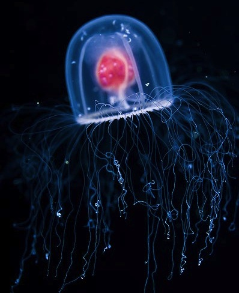

The Santa Monica Pier

It was after we passed Moby’s Dock
that Ebony met her first thresher shark
He was five feet long or so
two feet shark, three feet tail,
and had just been pulled from the surf
to be proudly displayed
by the fisherman who had caught him
Ebony stood transfixed
her every muscle poised
her feathered tail twitched
as she leaned closer to inspect
and then recoiled from this cold-blooded beauty
still dressed in fleetingly iridescent
blues and greens and purples -
As the sun’s fading beams highlighted
the magnificence of this dying shark
I mourned his loss that night.
The noise and tourists
in the Pier’s arcades and bumper cars
did not detract from the peacefulness
of the Pacific in her chaos
for this was August
and they would soon go home
I watched a distant storm at sea
flashing fire against the deepening twilight
I stood, and Ebony,
gazing at the flashes of lightning
as I stroked the waves of her black fur
relishing the cool wind on my face
listening to the rigging
of the boats resting at anchor off the Pier
Thinking about thresher sharks
Willing them away
from this place with its fishermen
and cold, baited hooks
Cori MacNaughton
13 Sept 2000
Shark Sauce
